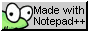
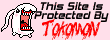

<html>
  <head>
    <meta charset="UTF-8">
   <title>animal's den</title>
	<link href="../fonts.css" rel="stylesheet" type="text/css" media="all">
	<link href="../style.css" rel="stylesheet" type="text/css" media="all">
	<link href="digimon.css" rel="stylesheet" type="text/css" media="all">
  </head>
  <style>
  body {
  overflow-y: hidden;
  text-shadow: -2px 2px 0 #000,
		1px 1px 0 #000,
		1px -1px 0 #000;
		-1px -1px 0 #000;
  }
  
  a {
   color: white;
	font-weight: bold;
	text-decoration: none;
	text-shadow: -1px 1px 0 #000,
		1px 1px 0 #000,
		1px -1px 0 #000;
		-1px -1px 0 #000;
	}
	
	a:hover {
  -webkit-animation: zomg 5s infinite;
  animation: zomg 5s infinite;
}

	@-webkit-keyframes zomg {
	  0%, 100% { color: #7ccdea; }
	  16%      { color: #0074d9; }
	  32%      { color: #2ecc40; }
	  48%      { color: #ffdc00; }
	  64%      { color: #b10dc9; }
	  80%      { color: #ff4136; }
	}
	@keyframes zomg {
	  0%, 100% { color: #7ccdea; }
	  16%      { color: #0074d9; }
	  32%      { color: #2ecc40; }
	  48%      { color: #ffdc00; }
	  64%      { color: #b10dc9; }
	  80%      { color: #ff4136; }
	}
  </style>
  <footer style="border: none">
<div align="center">     </div>
All background/header assets used on this page were provided by <a href="https://gallery.withthewill.net/index.php?cat=93" target="_top">With the Will's Digimon Style Guide</a>.<br><a target="_top" href="http://neocities.org/site/dreemurr" target="_top">neocities profile</a> | <a href="mailto:chimera@null.net" target="_top">email me</a> | est. 2023
</footer>